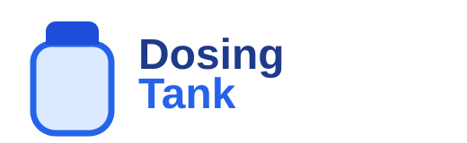
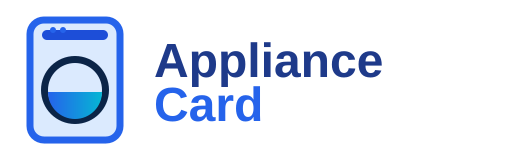

Lovelace card
Oklyn Card
Pool data at a glance — pH, RedOx, temperatures, pump control.
View on GitHub ›Lovelace card
PoolLab Card
Water analysis measurements, history and trends in Home Assistant.
View on GitHub ›Lovelace card
Dosing Tank Card
Chemical tank level tracked from pump run time. Refill alerts included.
View on GitHub ›
Lovelace card
Appliance Card
Washers, dryers, dishwashers — any brand, via configurable entity mapping.
View on GitHub ›
Integration · Cloud
Oklyn
Read and control your Oklyn pool controller through the cloud API.
View on GitHub ›Integration · Local
Oklyn Local
Local LAN polling of Oklyn devices — no cloud dependency.
View on GitHub ›Integration · Cloud
Worx Vision Cloud PLUS
Enhanced Landroid Vision integration — new sensors, more languages, fixes.
View on GitHub ›